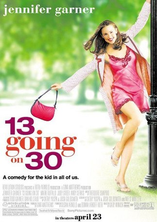

O impossivel
O Impossível é um filme espanhol de 2012. Ele é baseado na experiência de María Belón e sua família que sobreviveu ao Sismo do Índico de 2004.
O filme recebeu críticas positivas dos críticos por sua direção e sua atuação, especialmente para Watts, que foi indicada para o Oscar de melhor atriz, o Globo de Ouro
de melhor atriz em filme dramático, e um Screen Actors Guild Award para melhor performance por uma atriz num papel principal..
Mais informações
Voltar ao início
Desafiando gigantes

Desafiando Gigantes é um filme norte-americano de 2006, do gênero drama, dirigido e estrelado por Alex Kendrick e produzido pela Sherwood Pictures. O elenco de
apoio foi composto por voluntários da Sherwood Baptist Church. Filmado em Albany, Geórgia, o filme relata uma história sobre o futebol americano a partir de uma visão
cristã evangélica. O filme foi lançado para DVD no início de 2007 e fez a sua estreia na televisão em 21 de setembro de 2008, na Trinity Broadcasting Network.
Mais informações
Voltar ao início
Os corajosos
Os Corajosos é um filme estadunidense da indústria cinematográfica cristã do gênero drama, lançado em setembro de 2011. O longa-metragem é dirigido por Alex Kendrick,
mesmo diretor e universo de "À Prova de Fogo", e produzido pela Sherwood Pictures é uma sequência de À Prova de Fogo, sendo o segundo filme da primeira trilogia da saga
cristã À Prova de Fogo e segundo da franquia. O filme foi produzido com um orçamento de US $ 2 milhões[1], apenas no final de semana da estreia foi ultrapassado o valor
de seu orçamento, o arrecadamento total foi de $ 34 522 221 milhões de dólares. É o filme que continua a Fase 1: A Trilogia.
Mais informações
Voltar ao início
A prova de fogo
À Prova de Fogo é um filme norte-americano de 2008 dirigido por Alex Kendrick e produzido pela Sherwood Pictures. Embora o filme tenha
recebido críticas geralmente desfavoráveis dos críticos de cinema, foi um sucesso de bilheteria, tornando-se um sucesso surpresa, estreando no 4º lugar[3] e se tornando
o filme independente de maior bilheteria de 2008, arrecadando mais de $ 33 milhões.
Mais informações
Voltar ao início
De repente 30

De Repente 30 é um filme de 2004 do gênero comédia romântica e fantasia, estrelado por Jennifer Garner. É conhecido pelo nome Suddenly 30 na Austrália e 13 Love 30 no
Japão. O filme recebeu críticas positivas dos críticos, com muitos elogios ao desempenho de Garner e seu ambiente nostálgico.
Também foi elogiado por sua trama humorística e mensagem de auto-capacitação. O filme também foi um sucesso comercial, arrecadando US $22 milhões em sua primeira semana e
arrecadando mais de US$ 96 milhões, tornando-se um dos títulos de aluguel de DVDs mais vendidos do ano. Além disso, a trilha sonora ficou entre os 50 melhores do quadro
da Billboard 200 dos EUA. A atuação de Garner lhe rendeu indicações ao MTV Movie Awards e Teen Choice Award.
Mais informações
Voltar ao início
A creche do papai
A Creche do Papai é um filme estadunidense de comédia, estrelado por Eddie Murphy, Jeff Garlin, Steve Zahn, Regina King e Anjelica
Huston. Escrito por Geoff Rodkey e dirigido por Steve Carr, marca a segunda colaboração de Murphy e Carr após Dr. Dolittle 2 (2001). Foi produzido pela Revolution
Studios e lançado pela Columbia Pictures. Embora o filme recebeu críticas negativas em sua maioria, era bem sucedido financeiramente, arrecadando 164 milhões de dólares
em todo o mundo com um orçamento de 60 milhões de dólares além de cópias e publicidade. A sequência de 2007 Daddy Day Camp, estrelado por Cuba Gooding, Jr., foi quase
universalmente alvo dos críticos e fracassou nas bilheterias.
Mais informações
Voltar ao início
target="_blank">Mais informaçõesVoltar ao início